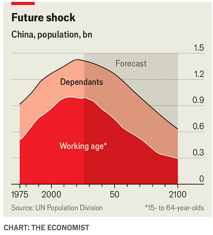

WEEKLY REMINDERS/ANNOUNCEMENTS – EWOT, Week 2
Readings and Topics this Week
We will stay in Section 1, Section A in the reading list and may start B by the end of the week. Please make your way through the readings and other related materials at your own pace as I lecture. Please read the syllabus and top of the reading list to see my comments on what to read for class and how to read. Quick answer: try to keep pace with the starred items, but read as little or as much as engages you, the material is not exactly what I cover in class. If you have not already done so, please read the short piece called, “I, Pencil.”
Some Advice
Read through your notes casually once per week – this makes exam preparation go much more smoothly.
No Class Monday
Labor Day is Monday, so sadly I won’t be seeing you again until next Wednesday.
Course Productivity Modules and Interfaces
All of your course questions answered, without having to read: https://chatgpt.com/g/g-6a763182a9d08191b73bba0904ed9144-econ-108-syllabus-what-do-you-need-to-know
Everything you could want to know about the course topics and readings … without having to read them: the UNReading List: https://chatgpt.com/g/g-6a6b783f83a881919379581ca86905d8-the-ewot-unreading-list
Office Hours Site, previous announcements resources: https://rochesterrizzo.github.io/Rizzo-Hours/index.html or tiny.cc/RizzoHours
The Economic Demonology Project: https://rochesterrizzo.github.io/economic-demonology/
Recitation
Thank you for your engagement in recitation, we DO have recitation next week, and it will be exploring the murky waters of “high causal density” in social science (your research assignment will also be doing the same thing). One way to frame it is, if I made you take any social problem, what lever would you pull to “fix” it? How would you know? The recitations are a great chance to meet your peers in a small setting, please go!
And the treat you’ve all been waiting for … Week Two Assignments
Look for your week one assignments to be graded, with some light comments, by next Sunday (we aim to turn around in one week all of your work).
Also, remember that we have put together a document that describes clearly how we will be grading each of the Research and Rumination assignments throughout the term. Should you have any grading questions we strongly recommend reading these first, then consult the Syllabus and/or Syllabus GPT, and then seek out a TA.
Both your second research and second rumination assignments are posted and due Sunday night, September 13th before 6:59pm. The Rumination is short, limited to 800 words of your reflections on two readings, and they are easily outsourceable to AI. We are not wanting you to use AI for it, and we would very much like you to think about and digest the readings. On the research side, we are introducing you to both how you examine the peer reviewed economics literature, and how you can do your own synthesis of what that literature says. This is essentially step one to almost any research project you can undertake in economics. Start it early.
TA Office Hours and Resources
Look for an announcement from our Head TA Katherine Watai.
My Availability
Check tiny.cc/RizzoHours for next week’s office hours and events. Check daily for last minute additions and updates.
I am off the grid from Friday afternoon through Monday night, so please run questions and communications through the TAs, I will not be available.
Reminder, here is where our outdoor office hours are located. Come by! Even if you don’t think you have much to say, we would love for you all to get to know each other and our former students too.

Upcoming Special Events
Department of Economics Engerman Lecture
“After Shocks: Adaptation and Growth through Volatile Times”
Who: Rick Hornbeck of the University of Chicago
Professor Hornbeck is the V. Duane Rath Professor of Economics at the University of Chicago Booth School of Business. He is a leading applied microeconomist and economic historian whose research explores the historical development of the American economy. By combining massive, newly digitized historical datasets with modern economic theory, his work uncovers the fundamental, long-term drivers of wealth, productivity, and living standards across generations. Professor Hornbeck’s research frequently reshapes how we understand major historical shifts and crises. His famous studies look beyond traditional metrics to evaluate the enduring economic footprint of environmental disasters like the 1930s Dust Bowl, the systemic human gains of post-Civil War emancipation, and the massive aggregate wealth generated by historical infrastructure expansions like the American railroad network. He holds a Ph.D. in Economics from the Massachusetts Institute of Technology (MIT) and previously served as the Dunwalke Associate Professor of American History in the Economics Department at Harvard University.
Day: Wednesday, September 16th
Time: 5:00pm
Where: Morey 321

The Politics and Markets Project, Hosted by Professor David Primo
Title: Topic TBD (this will be a moderated panel discussion)
Date: Wednesday, November 4th
Time: 7:30pm to 8:30pm
Location: Wegmans Hall, 1400.
More Info on the PMP: Follow on Instagram
Department of Economics Special Guest Lecture
Title: Human Capital for Humans, with moderation by U of R Economics Undergraduate Isaac Miller
Who: Pablo Pena of the University of Chicago
Date: Thursday, October 8th
Time: TBD
Location: TBD
More Info: Why do people marry, have kids, invest in health, or choose a career? Economics has an answer, and it's not "supply and demand," it's human capital theory, the framework Nobel laureate Gary Becker built and spent his career applying to every domain of human life. Pablo Peña studied under Becker at Chicago, taught his famous course after him, and has now written the accessible version of that legendary class: Human Capital for Humans.
Join us for a talk and conversation with Professor Peña about the book — how economists think about parenting, aging, marriage, and the everyday decisions that shape who we become. Expect a short talk, a moderated discussion, and open Q&A. Copies of the book will be available for purchase (and signing) at the event.
About Professor Pena: Pablo Peña first encountered human capital theory twenty years ago as an undergraduate captivated by a course taught by Nobel laureate Gary Becker at the University of Chicago — an experience he's described as immediately clarifying. That encounter led him to TA the course, and eventually to teach it himself. Peña is now an Associate Instructional Professor in Economics and the College at the University of Chicago, specializing in applied price theory, human capital theory, and empirical economics, and his research uses experimental and quasi-experimental methods and large datasets to test economic theories with actionable applications for business, nonprofits, and government. Outside academia, he co-founded Microanalitica, previously served as Director of Private Sector Partnerships at the Development Innovation Lab, and headed Economic Studies at Mexico's National Banking and Securities Commission. He earned his Ph.D. in Economics from the University of Chicago.
His book, Human Capital for Humans: An Accessible Introduction to the Economic Science of People (University of Chicago Press, 2025), has been nominated as a finalist for the Manhattan Institute's 2026 Hayek Book Prize, and has drawn praise from economists including Steven Levitt, Tyler Cowen, and Nobel laureate Michael Kremer.
Additional Events: Please check our office hours site regularly for updates on additional events.
Supply and Demand Mechanics Lab
Look for an announcement from our TA staff
Details: TBD
Some Items that Caught Our Attention
Nonprofit hospitals are not governed well.
Should we want More Nepotism in Government? “"Italy’s chronic unemployment problem has been thrown into sharp relief after 85,000 people applied for 30 jobs at a bank [. . . ] The work is not glamorous – one duty is feeding cash into machines that can distinguish banknotes that are counterfeit or so worn out that they should no longer be in circulation. The Bank of Italy whittled down the applicants to a “shortlist” of 8,000, all of them first-class graduates with a solid academic record behind them. They will have to sit a gruelling examination in which they will be tested on statistics, mathematics, economics and English [. . . ] The high level of interest was a reflection of the state of the economy but also of the Italian obsession with securing “un posto fisso” – a permanent job.”
The Almost Nearly Perfect People: “Our analysis suggests that income equality in the Nordics is largely driven by a significant compression of hourly wages, reducing returns to labor market skills and education. This appears to result from a wage bargaining system characterized by strong coordination within and across industries. This finding challenges other commonly cited explanations for Nordic income equality, such as redistribution through the tax transfer system, public spending on goods that complement employment, and public policies promoting equal skills and human capital.”
AI Doesn’t Make Firms Happy? Rewarding Empathy in a World of AI: $100 million ‘being human’ bonus (Via Jonas Du): “After investing billions of dollars in AI, the professional services firm Ernst & Young is now committing $100 million in bonuses for “human” skills like adaptability, innovation, and judgement. (um, what exactly were consultants being hired for before?) Employees and teams can now earn between $10,000 and $25,000 for making a “material difference” to the firm (read: not producing AI slop), according to the WSJ exclusive. This implies the salaries they’re earning now are for making a material indifference to the firm, which was a service I thought was only reserved for clients paying millions for 23-year-olds to tell them to cut costs and increase revenue. Anyways, they’re not alone — KPMG started a program to train interns in “critical thinking,” and PwC rolled out a curriculum emphasizing “empathy” and “creativity” alongside AI use. We shall see if that’s enough to stop their clients from realizing they can just GPT their own PowerPoints. Good luck.”
UBI Doesn’t Make You Happy … then what is the case for them? “In a three-year randomized experiment, $1,000 monthly transfers reduced labor-force participation 4.2 percentage points and recipients’ earned income about $1,900 annually; work hours fell modestly, while gains in subjective well-being disappeared after year one and productive investment did not rise.”
Partying Doesn’t Make You Happy: American Time Use Survey data covering 243,095 people show time with friends falling by more than half from 2003–2024, with the once-distinctive Friday-evening peak nearly disappearing. Implied (inference): social decline may reflect erosion of the institutions and schedules that coordinate people, not simply preferences for solitude. Why it matters: interventions aimed only at loneliness may miss the coordination technology that made recurring social life inexpensive. Comments: Plausible mechanisms include remote work weakening after-work rituals, declining alcohol use, suburbanization, childcare costs, and group chats or streaming providing incomplete substitutes; these are not identified causes.
Kids Don’t Make You Happy? Be careful what you wish for. “…children are increasingly seen as interfering with the freedom of parents; views on whether mothers of young children should work have become markedly more progressive and account for a substantially larger share of the decline among the tertiary-educated; and fewer people believe that women or men need children to lead a fulfilled life. This last attitude changed most over the decade and is the largest contributor to the fall in intended fertility, above all among less-educated women.”
Why is Fertility So Low in Rich Countries? Is it lifestyle choices?
How the financialization of real estate rips out our souls: specifically, the rise of distant owners without any particular interest in making an area beautiful or livable — harms the built environment. “All the qualities that give a place charm or loveliness are ones that are best stewarded by people who live there. Someone who owns the plot from afar, without even visiting, can never understand the subtle details that give it life. And the middleman property developer or manager just will never care.” [New Atlantis] See also this essay on why skyscrapers became glass boxes.
Drugs, Alcohol and Social Media: “Sixty-one percent of Australian children between the ages of 12 and 15 told researchers from a prominent UK foundation and an Australian youth research agency that they can still access accounts on major platforms just as they did before the ban was put in place.”
Not Vile Chalk! “The act of writing with chalk forces the mind to slow down and thus to encounter new concepts at a pace conducive to understanding. It makes collaboration easier than with a computer screen. There are no glitches or errors that can prevent the ideas flowing out. And it forces a cerebral discipline into the physical realm”
Young People from Poorer Countries are More Optimistic than You.
* * * * *
Chart of the Week: This graph in The Economist suggests that the fall in China’s working age population will be much more dramatic than the fall in their overall population (which itself is quite dramatic.)

Photo of the Week: …the federal government did something extraordinary: It committed more than $140 billion toward the region’s recovery. Adjusted for inflation, that’s more than was spent on the post-World War II Marshall Plan to rebuild Europe or for the rebuilding of Lower Manhattan after the Sept. 11 attacks. It remains the largest post-disaster domestic recovery effort in U.S. history… Today, New Orleans is smaller, poorer and more unequal than before the storm. It hasn’t rebuilt a durable middle class, and lacks basic services and a major economic engine outside of its storied tourism industry.
The core problem was the inability to turn abundant resources into a clear vision backed by political will. Federal dollars were funneled into a maze of state agencies and local governments with clashing priorities, vague metrics and near-zero accountability. Billions went to contractors and government consultants services such as schools, transit, health care and housing were neglected. For example, one firm, ICF International, received nearly $1 billion to administer Road Home, the oft-criticized state program to rebuild houses.”
Video/Documentary/Book/Cartoon of the Week: One of my all-time faves, including the soundtrack.
* * * * *
Quote of the Week
“You know, at one time, I used to break into pet shops to liberate the canaries. But I decided that was an idea way before its time. Zoos are full, prisons are overflowing... oh my, how the world still *dearly* loves a *cage.*”
Maude